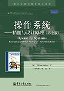
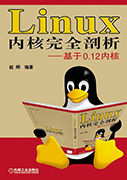

2. 使用教材¶
- 
- 操作系统——精髓与设计原理（第七版）
- Operating Systems: Internals and Design Principles (Seventh Edition)
- 著者：（美）William Stallings（威廉.斯托林斯）
- 译者： 陈向群， 陈渝
- ISBN：978-7-121-18510-6
- 
- Linux 内核完全剖析——基于0.12内核
- 著者： 赵炯
- ISBN: 978-7-111-25047-0
- Intel 64 and IA-32 Architectures Software Developer’s Manual
- Volume 3: System Programming Guide
-

- x86汇编语言：从实模式到保护模式
- 著者： 李忠，王晓波，余洁
- ISBN: 978-7-121-18799-5